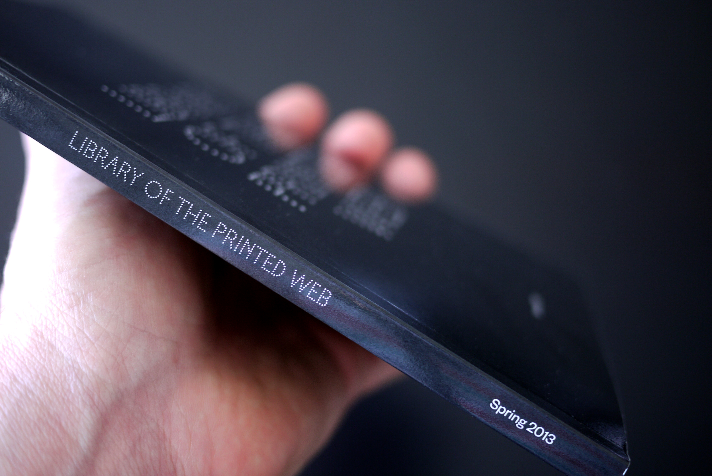
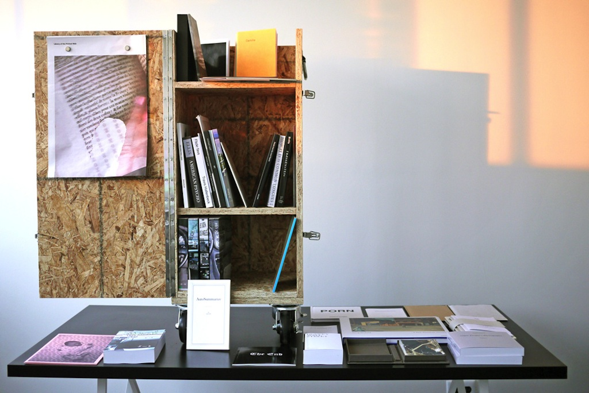
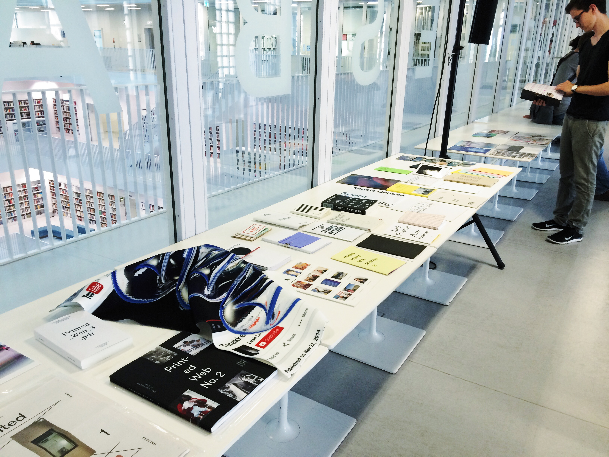
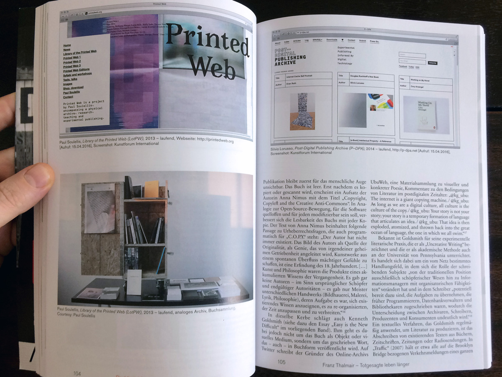
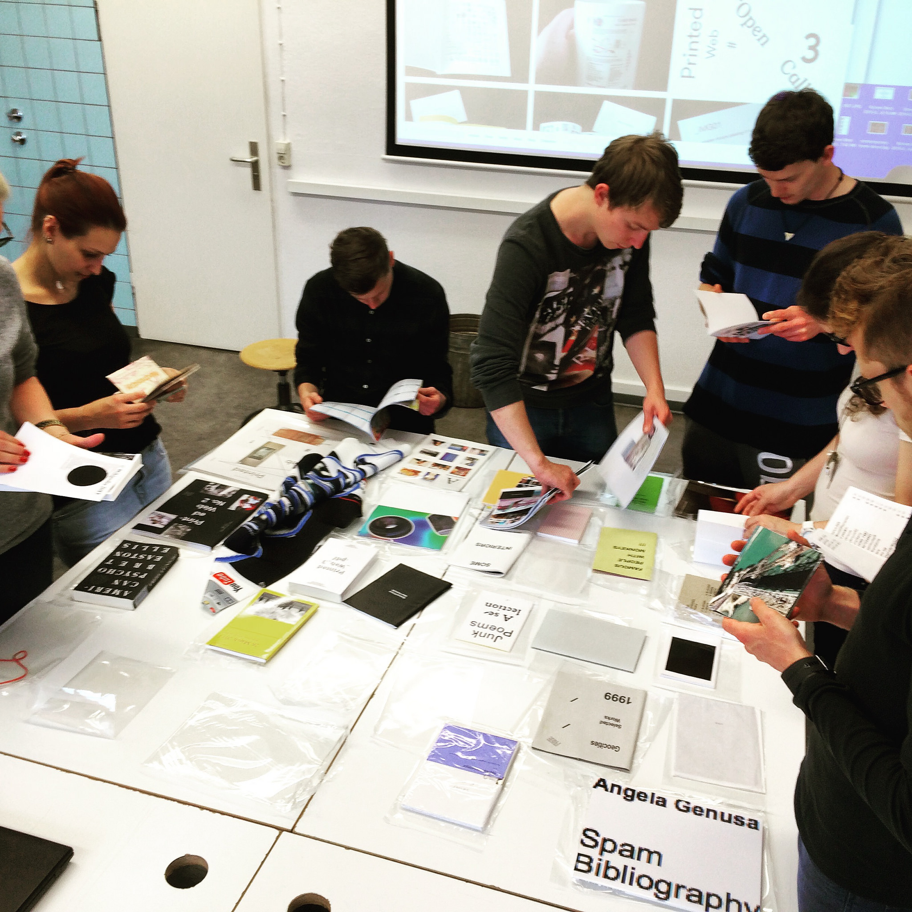
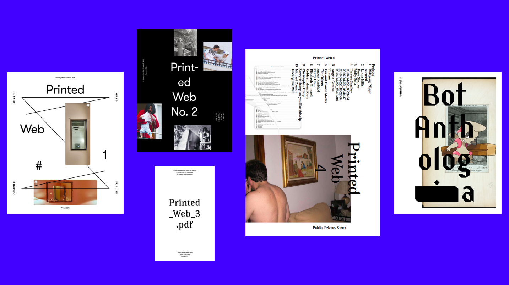

Library of the Printed Web (2013)

I founded Library of the Printed Web in 2013 to investigate web-to-print artistic practice and the increasingly fluid relationship between screen and printed page. It began as a small collection of mainly self-published artists’ publications that I acquired directly from artists and small publishers. It quickly grew, attracted attention, and became the subject of international exhibitions, workshops, research, and discourse. In 2014, I began publishing my own artists’ publications through Library of the Printed Web (Printed Web 1, 2, 3, 4, 5, 6 and Printed Web Editions), regularly featuring new work by a range of web-to-print artists in various print-on-demand forms.
By 2017, Library of the Printed Web had evolved to become an important resource for the study of print-based experimental publishing in the early 21st century. The collection was acquired by The Museum of Modern Art Library in New York in January 2017.

Included in MoMA’s acquisition were 244 items by 130 artists publishing in 17 countries—artists’ books, zines, newsprint, loose sheets, folios, prints, postcards, and other materials. A comprehensive catalogue was published in fall 2017, with contributions by David Senior and Sarah Hamerman of MoMA Library, and artist Sal Randolph.


Library of the Printed Web entered MoMA Library as a self-contained archive (including its own call number designation “LPW” in MoMA’s Dadabase), to be preserved in its entirety for years to come. The project is available for institutional loan, and accessible to the general public at MoMA’s midtown Manhattan location for viewing and research (by appointment). Many of the works are rare or no longer available. Most are self-published, including handmade, one-of-a-kind, limited editions, as well as many print-on-demand works.


Project site
Original LotPW tumblr site